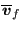

Keyword type: model definition
This keyword is used to define values at infinity for 3D fluid calculations. They are used to calculate the pressure coefficient  if requested as output by the user (*NODE FILE) and freestream boundary conditions for the turbulence parameters [49].
First line:
Second line:
Example: *VALUES AT INFINITY 40.,1.,11.428571,1.,40.
specifies a static temperature of 40., a velocity of 1., a static pressure of 11.428571 and a density of 1. at infinity. The size of the computational domain is 40.
Example files: fluid1,fluid2.